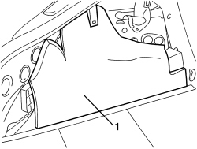
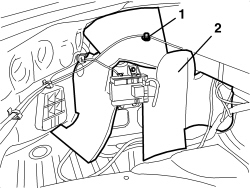

7095E35 REAR WING SOUND INSULATION PANEL (ONE), LEFT OR RIGHT - R.R.
- Path
- Procedures > 70 FITTINGS > 7095 BODYWORK MISCELLANEOUS > 7095E VARIOUS BODY INSULATION ELEMENTS > 7095E35 REAR WING SOUND INSULATION PANEL (ONE), LEFT OR RIGHT - R.R.
- Kind
- repair procedure (removal / refitting; the operation number is the code)
- Applies to
- all engines; all production periods
- Interactive page
- https://sloeber94.github.io/elrnDB-aBrrSpdr/en/#/946002706
Applies to: all engines; all production periods
 Removing
Removing
 Refitting
Refitting- Lower the rear seat backrest.
Op. 7040B22 LUGGAGE COMPARTMENT/LOAD PLATFORM MOULDING - R+R
- For the left trim.
Op. 7040G30 BOOT LIGHT BULB HOLDER - R.R.
Op. 7040B18 LOAD COMPARTMENT LOAD PLATFORM SIDE TRIM ONE LH OR RH - R.R
1. Remove the soundproof panel.

Applies to: all engines; all production periods
Refitting
Removing- Check that the soundproof panel is not damaged.
- Position the soundproof panel.
Op. 7040B18 LOAD COMPARTMENT LOAD PLATFORM SIDE TRIM ONE LH OR RH - R.R
Op. 7040G30 BOOT LIGHT BULB HOLDER - R.R.
Op. 7040B22 LUGGAGE COMPARTMENT/LOAD PLATFORM MOULDING - R+R
Applies to: engines: 2.2 JTS, 3.2 JTS; all production periods; only with equipment: Spider
Removing
RefittingOp. 7040B20 BACK TRIM FOR LUGGAGE COMPARTMENT/LOAD PLATFORM - ARRANGE
Op. 7040B10 LOAD PLATFORM (LUGGAGE PLATFORM) TRIM - R+R
Op. 7040B22 LUGGAGE COMPARTMENT/LOAD PLATFORM MOULDING - R+R
- for the left trim only
Op. 7040G30 BOOT LIGHT BULB HOLDER - R.R.
Op. 7040B18 LOAD COMPARTMENT LOAD PLATFORM SIDE TRIM ONE LH OR RH - R.R
1. Release the boot lid emergency opening cable retainer from the bodyshell.
2. Remove the sound insulation panel releasing the adhesive sections.

Applies to: engines: 2.2 JTS, 3.2 JTS; all production periods; only with equipment: Spider
Refitting
Removing- Check that the soundproof panel is not damaged.
- Position the sound insulation panel and attach the adhesive sections.
- Attach the boot lid emergency opening cable retainer to the bodyshell.
Op. 7040B18 LOAD COMPARTMENT LOAD PLATFORM SIDE TRIM ONE LH OR RH - R.R
- for the left trim only
Op. 7040G30 BOOT LIGHT BULB HOLDER - R.R.
Op. 7040B22 LUGGAGE COMPARTMENT/LOAD PLATFORM MOULDING - R+R
Op. 7040B10 LOAD PLATFORM (LUGGAGE PLATFORM) TRIM - R+R
Op. 7040B20 BACK TRIM FOR LUGGAGE COMPARTMENT/LOAD PLATFORM - ARRANGE
Topics linked from this page (5)
- 7040B10 LOAD PLATFORM (LUGGAGE PLATFORM) TRIM - R+R
- 7040B18 LOAD COMPARTMENT LOAD PLATFORM SIDE TRIM ONE LH OR RH - R.R
- 7040B20 BACK TRIM FOR LUGGAGE COMPARTMENT/LOAD PLATFORM - ARRANGE
- 7040B22 LUGGAGE COMPARTMENT/LOAD PLATFORM MOULDING - R+R
- 7040G30 BOOT LIGHT BULB HOLDER - R.R.